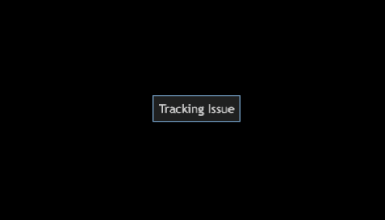
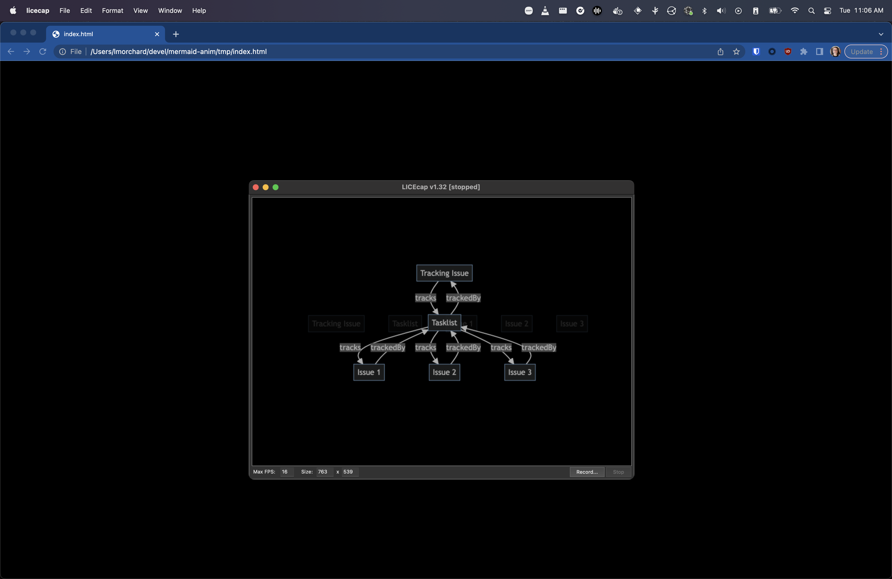

So, I wanted to produce a GIF animation of a graph diagram changing over time. What I came up with wasn't the slickest result, but it's close enough to what I'd initially imagined.

One of my earlier notions was to tinker with hand-crafted SVG animations. That led me to a great feeling of exhaustion before I even began.
Then I remembered that Mermaid diagrams are a thing. I decided what I really wanted to do was tap out some quick symbolic descriptions and let the computer do the drawing and animating for me.
graph TD A[Tracking Issue] B[Tasklist] A -- tracks --> B B -- trackedBy --> A
But, it wasn't that simple. Mermaid doesn't do animations. I scratched my head on this for awhile and felt a growing urge to hop down a rabbit hole of browser APIs to render Mermaid diagrams in a <canvas> and compose a GIF in a web page. And I could do it, too, you know - I can totally see those APIs all glued together and dancing in my head.
Luckily, I managed to pull myself back from the event horizon of that yak-shaving singularity. I found that there's a mermaid-cli which can render a Mermaid diagram to an image. But, even better, I discovered that mmdc can convert a markdown file bearing many Mermaid diagrams into a folder of images.
So, given that, I could compose a sequence of changing diagrams in one Markdown file:
## 1 ```mermaid graph TD A[Tracking Issue] ``` ## 2 ```mermaid graph TD A[Tracking Issue] B[Tasklist] ``` ## 3 ```mermaid graph TD A[Tracking Issue] B[Tasklist] A -- tracks --> B B -- trackedBy --> A ```
Running this though mmdc gave me the images I wanted:
mmdc -i index.md -o tmp/index.md -t dark -b transparent --outputFormat png
➜ mermaid-anim git:(main) ✗ ls -al tmp
total 296
drwxr-xr-x 13 lmorchard staff 416 Dec 13 14:37 .
drwxr-xr-x 10 lmorchard staff 320 Dec 13 13:33 ..
-rw-r--r-- 1 lmorchard staff 6021 Dec 13 15:21 index-1.png
-rw-r--r-- 1 lmorchard staff 27350 Dec 13 15:21 index-2.png
-rw-r--r-- 1 lmorchard staff 3499 Dec 13 15:20 index-3.png
-rw-r--r-- 1 lmorchard staff 3787 Dec 13 15:20 index-4.png
-rw-r--r-- 1 lmorchard staff 9954 Dec 13 15:20 index-5.png
-rw-r--r-- 1 lmorchard staff 12062 Dec 13 15:20 index-6.png
-rw-r--r-- 1 lmorchard staff 19654 Dec 13 15:20 index-7.png
-rw-r--r-- 1 lmorchard staff 21501 Dec 13 15:20 index-8.png
-rw-r--r-- 1 lmorchard staff 27350 Dec 13 15:20 index-9.png
-rw-r--r-- 1 lmorchard staff 98 Dec 13 15:21 index.md
Now the question was how to compile into a single GIF? Or, I guess, a video file would work - albeit in less meme-worthy fashion. (Wait, why does that matter? Nevermind, moving on...)
Another rabbit hole yawned open, drawing me toward ffmpeg documentation and suchlike. But, I thought, I can just load up a bunch of images on a web page and cross-fade from one to another. Then, I can record a screen capture as it plays in a browser window.
Here's the quick & dirty page I came up with:
<!DOCTYPE html>
<html>
<head>
<style>
body {
background-color: #000;
overflow: hidden;
}
.container {
position: relative;
display: flex;
align-items: center;
justify-content: center;
width: 100vw;
height: 100vh;
}
.xfader {
display: block;
position: absolute;
transition: opacity 0.5s;
opacity: 0;
}
.xfader.fade-in {
opacity: 1;
}
</style>
</head>
<body>
<div class="container">
<image class="xfader" src="./index-1.png" />
<image class="xfader" src="./index-2.png" />
<image class="xfader" src="./index-3.png" />
<image class="xfader" src="./index-4.png" />
<image class="xfader" src="./index-5.png" />
</div>
<script>
const xfaders = Array.from(document.querySelectorAll(".xfader"));
function xfade() {
xfaders.forEach((el) => el.classList.remove("fade-in"));
xfaders[0].classList.add("fade-in");
xfaders.push(xfaders.shift());
}
xfade();
setInterval(xfade, 1500);
</script>
</body>
</html>
Not award-winning code, but it does the job. And, for me at least, this JS hackery ended up being simpler than whatever shenanigans I'd considered with regards to <canvas> or CSS or SVG animations. (And yet, you may notice that I accomplished the most dangerous trick in all of web development - i.e. vertically centering content on a web page.)
And, while I guess I could have used the screen recording hotkey built into macOS, I was just really set on producing a GIF.
Thanks to a blog post from Christian Heilmann way back in 2013, the tool that immediately comes to mind for me is LICEcap. It works on Windows, it works on Mac, it's GNU-licensed, it's been around for years, it's great.
So, I opened the page, positioned the capture frame, and recorded my GIF:

I already spoiled the story by opening with the end result, but here it is again:
So, in conclusion, this is how I produced a GIF animation of a bunch of boxes and arrows and labels. It took me under an hour from start to finish - mainly because I managed to cobble together a bunch of things I already knew how to do.
Of course, the process at which I arrived was not the most efficient or elegant. It could quickly become annoying to repeat. If I end up finding a need to make many more of these diagram animations - or if I find that I end up going through many cycles of revision - I might revisit a few of those rabbit holes that I circumnavigated.
Anyway, maybe this could come in handy for someone else? Maybe future-me will appreciate that I wrote this down.